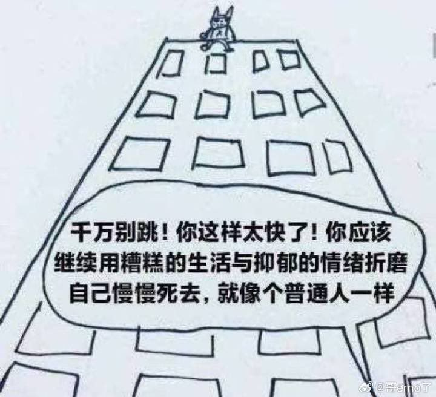

一切美好的都没有了。
@ansiyao520
普通人的生活虽然有烦恼，但包含希望、快乐、社会连接与自我调节的可能，并非“被抑郁情绪折磨慢慢死去”。
普通人也会通过找朋友，找老师，找父母，找网友，找书本的方式倾诉。或者寻求治疗、改变环境，而这段文字把“普通”定义成被动等死，诱导读者放弃任何行动走向绝望。
抑郁状态下，人容易认同“我该死”“没有希望”等负面信念。这句话正好强化了这种扭曲认知，把“忍受”说成是常态，把“改变”说成是遥不可及，会让分析者陷入更深的思维泥潭。这就是这段文字逻辑上的问题。
你现在感觉很糟，但这不代表永远如此。很多人在类似痛苦中找到了朋友、治疗或新的生活方式。请坚持下去。
